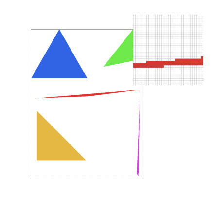

Similar to rasterizing a line, I begin by sorting the points in terms of x_coordinates to make my code implementation easier. Then I check the bounds of each tuple of points, making sure to clip any points that don’t fall into the valid possible space of the triangle ((0,0), (width, height)). I reduce the space needed to search over by running for loops only over the possible bounding box of the triangle defined by the highest y point of the triangle and highest x point. Then, for each pixel in this bounding box I simply check if the pixel falls into the triangle using point tests from class, and fill in the pixel if not. To optimize my code, I use the slope line equation to generate a new possible range for the valid x coordinates at a given y. This helps me optimize the performance by instead of looping over the minimum bounding box of the triangle, at each y in this bounding box I only look over the valid x coordinates in this line. Think of it as a 1 x (possible x range) bounding box at each iteration versus 1 x (range of bounding box). This is the result: Using my optimization:
Using my naive solution:As you can see, the first five frame renders rendered in less time than in the naive solution I had. However the benefit was really not enough for the added code complexity and debugging down the line, so I didn’t really end up using it in other functions. However the code is commented out in my files if you want to test it for yourself! Interesting part of basic/test4.svg:
In the worst case of my algorithm, the two for loops run in O((x_max - x_min) * (y_max - y_min)) time where x_min, x_max, y_min, y_max correspond to the range for the height of the triangle and range for the width. This is by definition the smallest triangle that can be drawn while ensuring the entire triangle is inside it.|

|
|
|
RasterizerImp::rasterize_triangle() -> To implement supersampling in void RasterizerImp::rasterize_triangle , I first created super sample indexes for the x and y point I was evaluating. I think of it as the pixel was instead sqrt(sample_rate) x sqrt(sample_rate) (like as if I was zooming into a pixel) size box on the canvas colored by the color instead of a single pixel. Then, I simply check if each of these “zoomed in” pixels are still in the triangle. This is important to do instead of simply checking if x and y are the triangle because now that our “zoomed in pixel” is bigger, more of it might be out of the triangle than before (some points in the sqrt(sample_rate) x sqrt(sample_rate) box might be out). Then I color in the pixel by putting in the big zoomed in pixel into the buffer. At the end of this, our buffer is huge! It would be the buffer for the canvas of the regular image but now for the image magnified by the sample rate.
RasterizerImp::resolve_to_framebuffer() -> modified to set target color for rgb target buffer to downsampled color This means when we resolve it to the rgb frame target, we need to minimize it again. I do this by taking iterations of sample_rate pixels from the buffer, downsampling it to a single color by averaging the sum, and then setting the target for the actual pixel to this down-sampled color. I think of this as “for every sample rate number of pixels in the magnified image, average the color of those pixels in the magnified image and only color in one pixel with this magnified image into the frame buffer”. To account for our huge super sample buffer before downsampling, the following functions have also been modified:
RasterizerImp::set_sample_rate() -> buffer resized with new sample rate
RasterizerImp::set_framebuffer_target() -> buffer resized with new sample rateSupersampling is important because it helps us remove jaggies (anti-aliasing), especially for high frequency details like thin triangle edges. This makes the graphic smoother, and more visually appealing. It helps create the effect of a higher resolution image. As you can see in the image for rate 1, we have a very jaggy image. In rate = 4, we have some gradient on the edge because when we downsample, we are color averaging from more sample points which includes some of the white pixels, making the edge look less jagged. In rate = 16, this effect is dramatically larger because we are downsampling more pixels.
In RasterizerImp::rasterize_textured_triangle() -> To implement pixel sampling for texture mapping, we need a way to store our graphic space into texture space. I do this by using barycentric coordinates as a transformation from the graphic space to texture. Finally, we compute the final sample color using either nearest-pixel or bilinear sampling, and color in the pixel.
In Texture::sample_bilinear(Vector2D uv, int level) -> We convert the (u,v) coordinates to the texel coordinates (texture map) in the texture using a MipMap, which is a collection of textures at different levels of details. 0 corresponds to the original texture, which is what we will assume in Task 5. So we find the four nearest texels in this texture map to our (u, v), calculate the differences in texture from each of these texels to our (u, v) point, and use bilinear interpolation on these four texels to calculate the final color of our (u, v) point (which if you remember, corresponds to the x, y pixel)
In Texture::sample_nearest() -> Instead of performing interpolation, we simply round to find the closest texel of the (u, v) coordinate and return the color of the texel. Nearest sampling simply finds the nearest texel to the (u, v) coordinate while bilinear uses bilinear interpolation across the four closest texels to (u, v). This means that bilinear has transitions, and is better for realistic images. This can be seen below:
|
|
|
|
|
|
The largest difference between these two sampling methods is when we need to render a realistic image (which requires very smooth transitions to ensure realism), but have little computational power (so we can’t use a high super sampling rate to help smooth the jaggies). In this situation, bilinear sampling will outperform nearest sampling.
Level sampling (mipmap) sampling is when we store multiple versions of the texture at lower and lower resolutions, and then sample at the appropriate texture level. For example, when objects are farther away, they look more blurred in real life and don’t need a high resolution texture. Also, when you try to condense a high resolution texture to a single pixel, it can end up as the wrong color, creating image artifacts. To figure out which mipmap level to use, similar to Task 5, we find the barycentric coordinates (u,v) for l (x, y). I also compute differentials in the x and y direction, (x+1,y) and (y+1, x). Then, I calculate the corresponding (u,v) texture point for each of these coordinates. We use differentials because it helps us compute how the texture coordinates change across the pixel. Think of this as basically “rate of change of the texture” in each direction.
In Texture::get_level() -> I calculate the difference in texture coordinates for the x and y directions. I also calculate the magnitude of change in the x direction and magnitude of change in the y direction. Then, I return the mipmap level to sample from the largest rate of change between x and y direction. This is the mipmap level we will sample from.
In Texture::sample() -> To finish the implementation of bilinear level sampling, I take the two nearest levels to our target mipmap level and sample from them, weighting the output. For nearest level sampling, I simply round the level to the find the nearest level and sample from that level. We now have three sampling techniques: pixel sampling, level sampling, and supersampling (number of samples per pixel). The tradeoffs between speed, memory usage, and antialiasing power are as follows:
Supersampling: As we increase the sample rate, we have a much better anti-aliasing power and smoothest output, but we decrease speed and increase memory usage.
Level sampling: Nearest level sampling has the highest speed and lower memory usage than linear, results in less aliasing but not as well as linear level sampling Linear level sampling has lower speed and more memory usage than nearest level sampling, but better anti aliasing power
Pixel sampling: Nearest pixel sampling has less speed and memory usage than bilinear, but is not as good as anti aliasing. Bilinear is slower and about the same if not more memory usage than nearest, but better anti aliasing power. If speed needs to be prioritized, the best combination is bilinear pixel sampling, nearest level sampling, and a low sample rate. If high quality is the priority, then the combination should be bilinear pixel, linear level, and a high sample rate. Finally if memory is the priority, then we should use nearest pixel sampling, nearest level sampling, and a small sample rate.